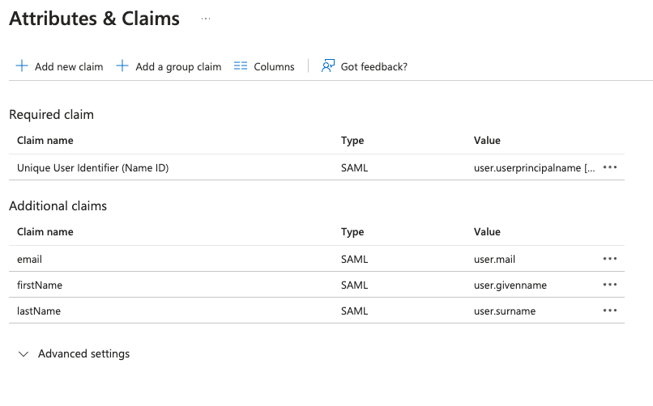

Register Elastic Cloud SAML in Microsoft Entra ID
editThis functionality is in technical preview and may be changed or removed in a future release. Elastic will work to fix any issues, but features in technical preview are not subject to the support SLA of official GA features.
To configure Elastic Cloud SAML SSO with Microsoft Entra ID (formerly Azure AD) as the identity provider (IdP):
-
Create a new Entra ID Enterprise application.
- Choose to create a non-gallery application.
- Provide a name and basic information about the application.
- Select SAML as the single sign-on method.
- Initially use placeholder values for the entity ID, reply or assertion consumer service (ACS) URL, and sign on URL.
-
Configure an
emailattribute in the Attributes & Claims section.Optionally set
firstNametouser.givennameandlastNametouser.surname. These values will be used to set the respective fields of the user’s Elastic Cloud account. For example:
-
Collect information about the application from the Entra ID screen.
- Get the "Login URL" for the SSO URL, which is the URL where users will be redirected at login.
- Get the "Microsoft Entra Identifier" for use as the issuer.
- Download the signing certificate.
-
Register the IdP with Elastic Cloud.
For example:
curl -XPUT \ -H 'Content-Type: application/json' \ -H "Authorization: ApiKey $EC_API_KEY" \ "https://api.elastic-cloud.com/api/v1/organizations/$ORGANIZATION_ID/idp" \ -d ' { "enabled": true, "login_identifier_prefix": "<businessname>", "name": "SSO with <businessname>", "saml_idp": { "public_certificate": [ "<publiccert>" ], "issuer": "<issuer>", "sso_url": "<ssourl>", "subject": { "format": "urn:oasis:names:tc:SAML:1.1:nameid-format:unspecified" } } } 'login_identifier_prefixis a customizable piece of the Elastic Cloud SSO url that your organization members can use to authenticate. This could be the name of your business. You can use alphanumeric characters and hyphens in this value and you can change it later.public_certificateis the Base64-encoded DER-encoded certificate that you downloaded. You must remove newlines and any PEM markers (such as-----BEGIN CERTIFICATE-----or-----END CERTIFICATE-----) so that the certificate is a single-line Base64-encoded string.issueris the "Microsoft Entra Identifier" obtained from the Entra ID screen.sso_urlis the "Login URL" obtained from the Entra ID screen.formatis the SAML name-id format to use.If successful, the API will return the details that will need to be provided to the IdP. For example:
{ "login_identifier": "<loginidentifier>", "sso_login_url": "https://cloud.elastic.co/login/sso/<loginidentifier>", "metadata_url": "https://cloud.elastic.co/api/v1/organizations/<orgid>/idp/metadata.xml", "acs": "<acs>", "sp_entity_id": "https://cloud.elastic.co/organizations/<orgid>", "signing_certificate": [ "<cert>" ] }sso_login_urlis the URL you can provide to organization members to initiate SSO with your Elastic Cloud organization.acsis the SAML assertion consumer service that your SAML IdP should send SAML assertions.sp_entity_idis the SAML entity ID of the service provider that your SAML IdP should send in the SAML audience.signing_certificateis the Base64-encoded DER-encoded certificate that SAML requests to your IdP will be signed with. -
Update the Basic SAML Configuration section of the Entra ID Enterprise application to use the values returned by the registration API.
-
Set the entity ID to the
sp_entity_idvalue. -
Set the reply or ACS URL to the
acsvalue. -
Set the sign on URL to the
sso_login_urlvalue.
-
Set the entity ID to the
- Optionally update the Verification certificates section of the Entra ID Enterprise application to add the certificate returned by the registration API and turn on certificate verification.
When these steps are complete, you should be able to test SSO as described in Configure Elastic Cloud SAML SSO.